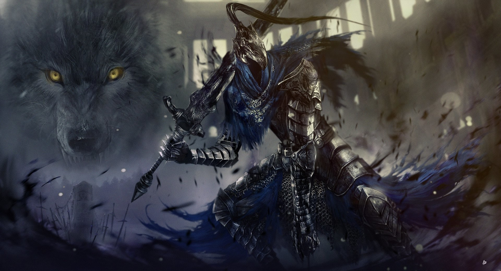

Une entité d'une beauté insaisissable, en même temps qu'une terreur cosmique. Personne ne sait vraiment d'où elle vient, ni ce qu'elle représente exactement, mais une chose est certaine : elle est bien plus qu'une simple créature. Elle semble être l'incarnation de l'essence même du cosmos, une manifestation d'une force qui dépasse tout ce que l'on peut comprendre.
Artorias, le Chevalier Abyssal
Sa posture est celle d'un combattant aguerri, prêt à faire face à toutes les menaces, son corps marqué par des blessures anciennes et profondes. Une lueur de détermination habite ses yeux, même s'il semble hanté par un lourd fardeau. Il évolue dans un monde qui ne lui pardonne aucune faiblesse, luttant sans relâche contre des forces obscures et des créatures inhumaines. Artorias incarne la quête incessante de l'héroïsme, l’idée du sacrifice et de la lutte face à une destinée implacable.

Le Roi Sans Nom, Maître des Tempêtes
enveloppée d’une aura de pouvoir divin et d’étrangeté. Vêtu d'une armure antique, ornée de détails célestes, il porte un casque imposant qui masque son visage, laissant seulement transparaître une lueur menaçante dans ses yeux. Sa posture est royale, mais également prête au combat, indiquant qu’il est un guerrier d'exception, forgé par les épreuves et la guerre. Il est accompagné d’une créature massive, un dragon, qui semble être son compagnon et sa monture, une bête aussi redoutable que son maître.